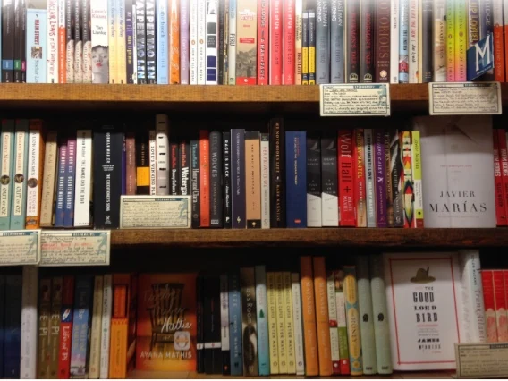

特集 本と街

予定のない日に、本屋へ。
本を決めずに、
本屋へ。
30秒の小文を読む ↓気になるものから 読む・聴く・観る
ひとくち読み物 · 約30秒本を決めずに、本屋へ。
本屋に入ったら、いつも選ばない棚をひとつだけ眺めてみる。題名の響き、背表紙の色、知らない言葉。気になった一冊を開いて、一行だけ読む。買うかどうかは、そのあとでいい。今日は「気になる」をひとつ見つけたら、それで十分。
本・音楽・映像・街の催しに出会う文化案内
読む、聴く、観る、出かける。
今日の楽しみ、ここから。

予定のない日に、本屋へ。
本屋に入ったら、いつも選ばない棚をひとつだけ眺めてみる。題名の響き、背表紙の色、知らない言葉。気になった一冊を開いて、一行だけ読む。買うかどうかは、そのあとでいい。今日は「気になる」をひとつ見つけたら、それで十分。